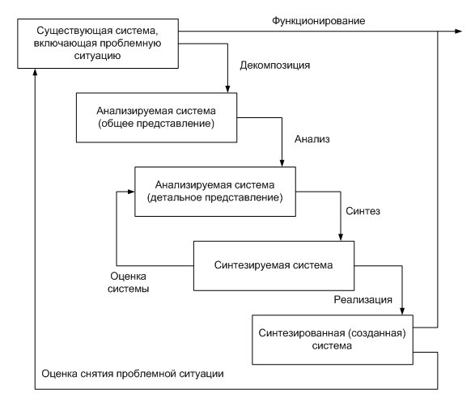
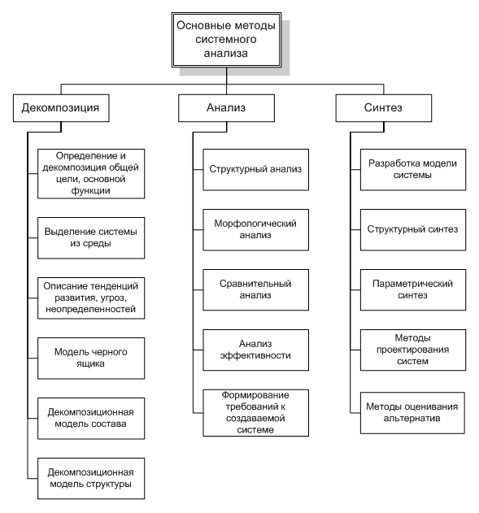

Системный анализ опирается на ряд прикладных логико-математических дисциплин, технических процедур и методов, широко используемых в деятельности управления, включая формализованные и неформализованные средства исследования, а также на совокупность принципов, то есть исходных, принимаемых за истину правил, которые используются в качестве основы для построения методов анализа.
Методологическую основу системного анализа составляет системный подход, который в самом общем смысле подразумевает рассмотрение системы любой степени сложности как:
- состоящей из отдельных, связанных между собой определёнными отношениями, частей;
- находящейся во взаимодействии с внешней средой;
- находящейся в непрерывном развитии.
Для организации процесса исследования при проведении системного анализа разрабатывается комплекс методов, определяющих последовательность этапов проведения анализа и процедуры их выполнения.
Методы системного анализа направлены на формулирование проблемы, выявление целей, выдвижение альтернативных вариантов решения проблем, выявление масштабов неопределённости по каждому из вариантов и сопоставление вариантов по тем или иным критериям эффективности, а также принятия решений и связанных организационных задач. В общем случае при рассмотрении существующей системы и процесса её функционирования выявляется проблемная ситуация как несоответствие существующего положения дел требуемому. Для разрешения проблемной ситуации проводится системное исследование при помощи методов декомпозиции, анализа и синтеза системы. Моделирование системы, то есть реализация системы в виде модели, позволяет провести оценку степени снятия проблемной ситуации. Общий подход к разрешению проблемных ситуаций, применяемый в рамках системного анализа, представлен на схеме:

Основные методы системного анализа и соответствующие им процедуры в упрощённом виде могут быть представлены в виде трёхуровневого дерева:

В практической деятельности обычно не следуют указанному на схеме выше строго формальному разделению методов системного анализа по этапам проведения исследования, так как в действительности задачи системного анализа являются достаточно сложными, поэтому перечисление этапов не может быть самоцелью. Непосредственное применение тех или иных методов связано с предметом исследования и конкретным содержанием решаемой задачи.
Декомпозиция системы
На этапе декомпозиции системы, обеспечивающем её общее представление, осуществляются:
- определение и декомпозиция целей исследования и основной функции системы как ограничение траектории в пространстве состояний системы или в области допустимых ситуаций;
- выделение системы из среды: определение ближнего и дальнего окружения системы, а также выявление и описание воздействующих факторов;
- описание тенденций развития, ограничений и неопределённостей разного рода;
- описание системы как «чёрного ящика»;
- проведение компонентной (по виду элементов) и структурной (по видам отношений между элементами) декомпозиции системы.
Процесс декомпозиции довольно сложен и требует привлечения квалифицированных экспертов. Основной проблемой при этом является соблюдение двух противоречивых принципов:
- принципа полноты — системная проблема должна быть рассмотрена максимально всесторонне и подробно;
- принципа простоты — системное моделирование должно быть максимально компактным на всех уровнях.
Компромисс в указанном противоречии достигается с помощью четырёх основополагающих принципов:
- принципа существенности — в системную модель включаются только компоненты, существенные по отношению к целям анализа;
- принципа элементарности — доведение декомпозиции до простого, понятного, реализуемого результата;
- принципа постепенной детализации модели;
- принципа итеративности — возможность введения новых элементов в основания и продолжение декомпозиции по ним на разных ветвях дерева.
Глубина декомпозиции ограничивается. Так, декомпозиция должна прекращаться, если необходимо изменить уровень абстракции — представить элемент как подсистему. Если при декомпозиции выясняется, что модель начинает описывать внутренний алгоритм функционирования элемента вместо закона его функционирования в виде «чёрного ящика», то в этом случае произошло изменение уровня абстракции. Это означает выход за пределы цели исследования системы и, следовательно, вызывает прекращение декомпозиции. В современных методиках типичной является декомпозиция модели на глубину 5–6 уровней. На такую глубину декомпозируется обычно одна из подсистем. Функции, которые требуют такого уровня детализации, часто очень важны, и их детальное описание даёт ключ к основам функционирования всей системы.
Согласно теории систем, большинство систем могут быть декомпозированы на базовые представления подсистем. К ним относят:
- последовательное (каскадное) соединение элементов;
- параллельное соединение элементов;
- соединение элементов с помощью обратной связи.
Наиболее часто применяются следующие стратегии декомпозиции:
- Функциональная декомпозиция. Базируется на анализе функций системы. При этом ставится вопрос, что делает система, независимо от того, как она работает. Основанием разбиения на функциональные подсистемы служит общность функций, выполняемых группами элементов.
- Декомпозиция по жизненному циклу. Признак выделения подсистем — изменение закона функционирования подсистем на разных этапах цикла существования системы от создания до прекращения функционирования или применения. Так, в производственном жизненном цикле (в соответствии с ISO 9000) выделяют следующие его стадии:
- маркетинг;
- проектирование;
- подготовка и разработка;
- производство;
- контроль и испытания;
- упаковка и хранение;
- реализация и распределение;
- монтаж и эксплуатация;
- техническая помощь в обслуживании;
- утилизация.
В жизненном цикле управления организационно-экономической системы есть некоторые стадии:
- планирование;
- инициирование;
- координация;
- контроль;
- регулирование.
В жизненном цикле информационных систем его стадии соответствуют этапам обработки информации:
- регистрация;
- сбор;
- передача;
- обработка;
- отображение;
- хранение;
- защита;
- уничтожение.
Рекомендуется применять эту стратегию, когда целью системы является оптимизация процессов и когда можно с достаточной точностью определить последовательные стадии преобразования входов в выходы.
- Декомпозиция по физическому процессу. Признак выделения подсистем — шаги выполнения алгоритма функционирования подсистемы, стадии смены состояний. Хотя эта стратегия полезна при описании существующих процессов, результатом её часто может стать слишком последовательное описание системы, которое не будет в полной мере учитывать ограничения, диктуемые функциями друг другу. При этом может оказаться скрытой последовательность управления. Применять эту стратегию следует, только если целью модели является описание физического процесса как такового.
- Декомпозиция по подсистемам, или структурная декомпозиция. Признак выделения подсистем — сильная связь между элементами по одному из типов отношений (связей), существующих в системе (информационных, логических, иерархических, энергетических и других). Силу связи, например, по информации можно оценить коэффициентом информационной взаимосвязи подсистем k = N/N0, где N — количество взаимоиспользуемых информационных массивов в подсистемах, N0 — общее количество информационных массивов. Для описания всей системы должна быть построена составная модель, объединяющая все отдельные модели. Рекомендуется использовать разложение на подсистемы, только когда такое разделение на основные части системы не изменяется. Нестабильность границ подсистемы быстро обесценит как отдельные модели, так и их объединение.
- Декомпозиция по входам для организационных систем. Признак выделения подсистем — источник воздействия на систему, это может быть вышестоящая или нижестоящая система, а также существенная среда.
- Декомпозиция по типам ресурсов, потребляемых системой. Формальный перечень типов ресурсов состоит из энергии, материи, времени и информации (для организационных систем в этот перечень добавляются кадры и финансы).
- Декомпозиция по конечным продуктам системы. Основанием могут служить различные виды продукта, производимые системой.
- Декомпозиция по деятельности. В системе выделяется субъект деятельности, объект, на который направлена деятельность, средства, используемые в процессе деятельности, внешняя среда, а также все возможные связи между ними. Обычно декомпозиция по деятельности осуществляется по нескольким основаниям, порядок их выбора определяется предметом исследования и конкретным содержанием решаемой задачи.
Анализ систем
На этапе анализа системы, обеспечивающем формирование её детального представления, наиболее часто применяются следующие методы:
- Когнитивный анализ — акцентирует внимание на «знаниях» в конкретной предметной области, на процессах их представления, хранения, обработки, интерпретации и производстве новых знаний. Он применяется в тех случаях, когда объём и качество имеющейся о проблеме информации не позволяют использовать традиционные методы, а требуется извлечение знаний экспертов, изучение процессов понимания ими проблемы и дополнительная структуризация данных. История развития когнитивного анализа применительно к принятию решений и управлению ситуациями тесно связана с исследованиями процессов человеческого мышления и психологии.
- Структурный анализ — позволяет рассмотреть существующую систему с тем, чтобы сформулировать требования к создаваемой системе. Он включает уточнение состава и закономерностей функционирования элементов, алгоритмов функционирования и взаимовлияний подсистем, разделение управляемых и неуправляемых характеристик, задание пространства состояний и параметрического пространства, в котором задано поведение системы, анализ целостности системы, формулирование требований к создаваемой системе.
- Морфологический анализ — позволяет выбрать в анализируемой системе группу основных признаков. В качестве таких признаков могут быть взяты элементы структуры системы либо функции элементов. Для каждого признака предлагаются различные альтернативные варианты его реализации. Затем предложенные варианты комбинируют между собой. Из всего множества получаемых комбинаций выбираются допустимые, а затем наиболее эффективные варианты по некоторым критериям качества.
- Анализ эффективности — позволяет провести оценку системы по результативности, ресурсоёмкости, оперативности. Он включает выбор шкалы измерения, формирование показателей эффективности, обоснование и формирование критериев эффективности, непосредственно оценивание и анализ полученных оценок.
- Формирование требований — позволяет сформировать требования к создаваемой системе, включая выбор критериев оценки и ограничений.
Синтез систем
На этапе синтеза системы осуществляются:
- Разработка модели требуемой системы. Этот этап включает выбор соответствующего исследованию математического аппарата, собственно моделирование системы, оценка модели по критериям адекватности, простоты, соответствия между точностью и сложностью, баланса погрешностей, многовариантности реализаций, модульности построения. Полученная модель исследуется с целью выяснения близости результата применения того или иного из вариантов её реализации к желаемому, сравнительных затрат ресурсов по каждому из вариантов, степени чувствительности модели к различным нежелательным внешним воздействиям.
- Синтез альтернативных структур системы, разрешающий проблемную ситуацию. На этом этапе активно используются результаты структурного и морфологического анализа для генерации альтернатив.
- Синтез параметров системы, снимающей проблему. Этот этап включает качественные и количественные характеристики функциональных элементов структуры и описание их функций, а также основные характеристики входящих и выходящих из системы потоков (материальных, энергии, времени и информации) и параметры их взаимодействия с внешней средой.
- Оценивание альтернативных вариантов синтезированной системы. Этот этап проводится, как правило, с привлечением экспертов, и включает обоснование схемы оценивания вариантов реализации системной модели, проведение эксперимента по оценке, обработку результатов оценивания, анализ результатов, выбор наилучшего варианта.